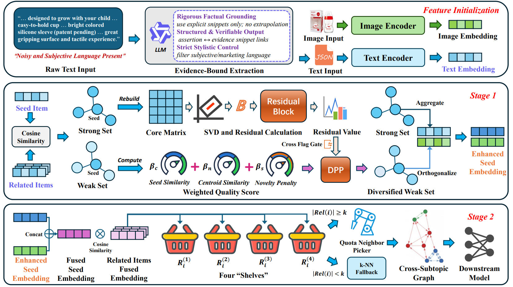
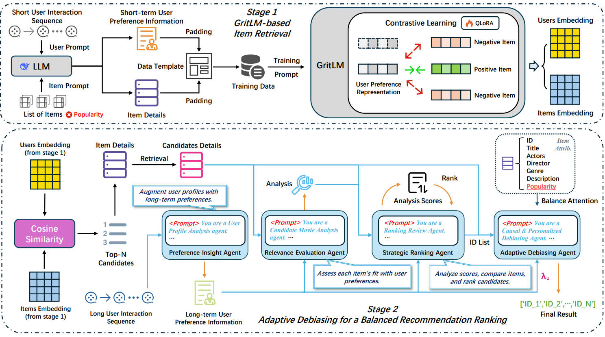
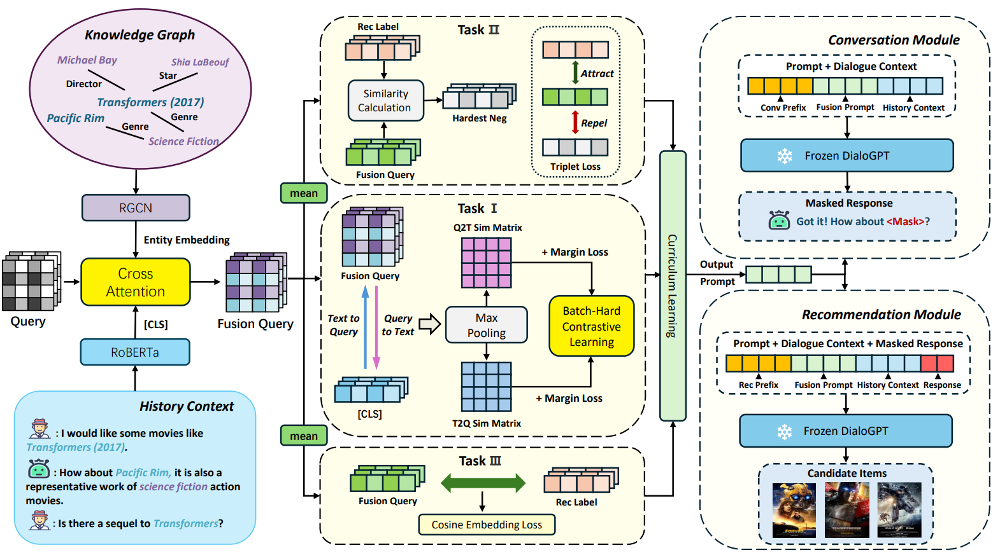
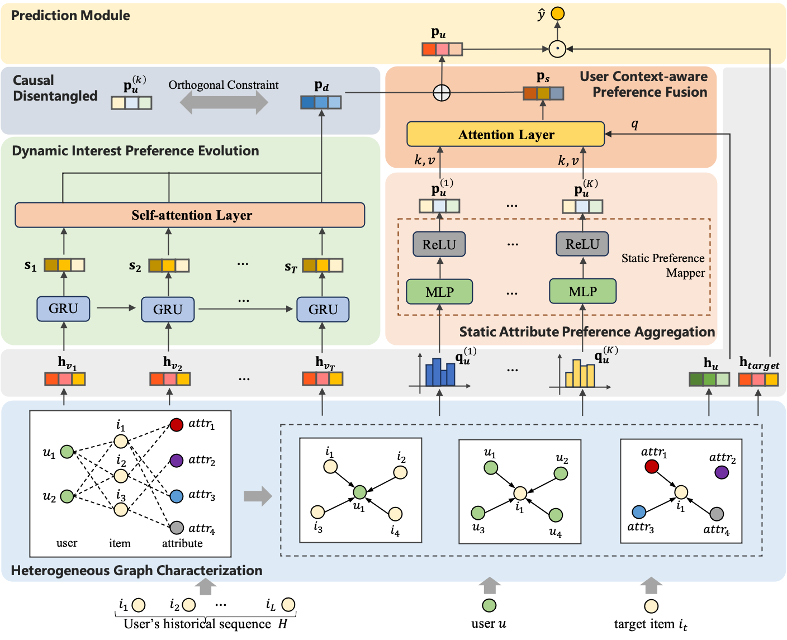
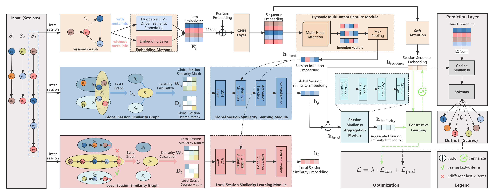

Zhenye Yang
About Me
Alexander Yang received his B.S. degree from Beijing University of Posts and Telecommunications, Beijing, China in 2024. He is currently pursuing a M.S. degree in the ACDC Group, with a research field in generative recommendation systems.
Research Interests
- Recommendation System: Conversational Recommender, Multimodal Recommender
- Large Language Models: Multi-agent Systems, Prompt Engineering
News
- [Aug. 2025] Our paper about Conversational Recommendation is accepted to CIKM 2025
- [Aug. 2025] Our paper about Explainable Sequential Recommendation is accepted to TCSS 2025.
- [Aug. 2025] Our paper about Heterogeneous Graph Recommendation is accepted to ICDM 2025.
- [Apr. 2025] Our paper about Session Recommendation is accepted to SIGIR 2025.
Publications
-
 ICDE
The annual IEEE International Conference on Data Engineering (ICDE), 2026.Submitted(Optimization in progress)
ICDE
The annual IEEE International Conference on Data Engineering (ICDE), 2026.Submitted(Optimization in progress) -
 WWWThe Web Conference (WWW), 2026.Submitted
-
 WWWThe Web Conference (WWW), 2026.Submitted
-
 CIKMACM International Conference on Information and Knowledge Management (CIKM), 2025.Oral Presentation
-
 ICDMIEEE International Conference on Data Mining (ICDM), 2025.Oral Presentation
-
 TCSS
IEEE Transactions on Computational Social Systems (TCSS), 2025.
TCSS
IEEE Transactions on Computational Social Systems (TCSS), 2025. -
 SIGIRACM SIGIR Conference on Research and Development in Information Retrieval (SIGIR), 2025.PDF Oral Presentation
Services
Conference Reviewers
ACM International Conference on Multimedia (MM) 2025 AAAI Conference on Artificial Intelligence (AAAI) 2025
Journal Reviewers
Powered by Jekyll and Minimal Light theme.